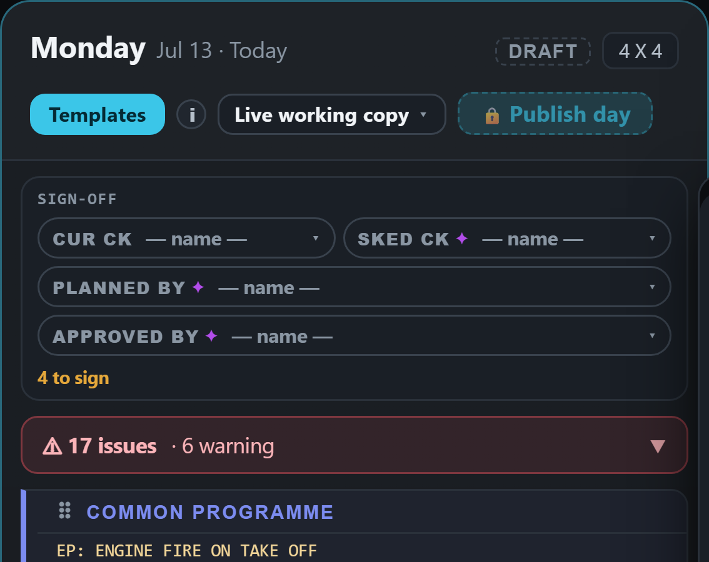
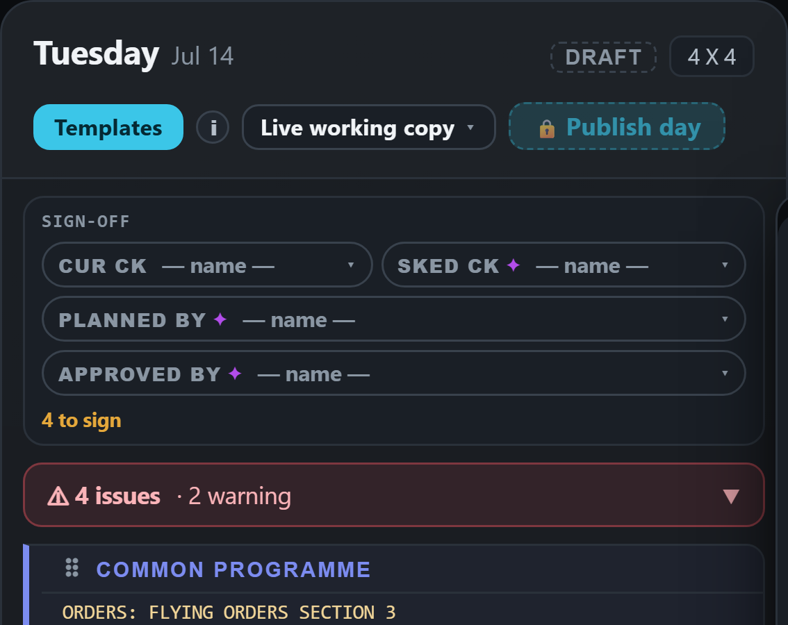
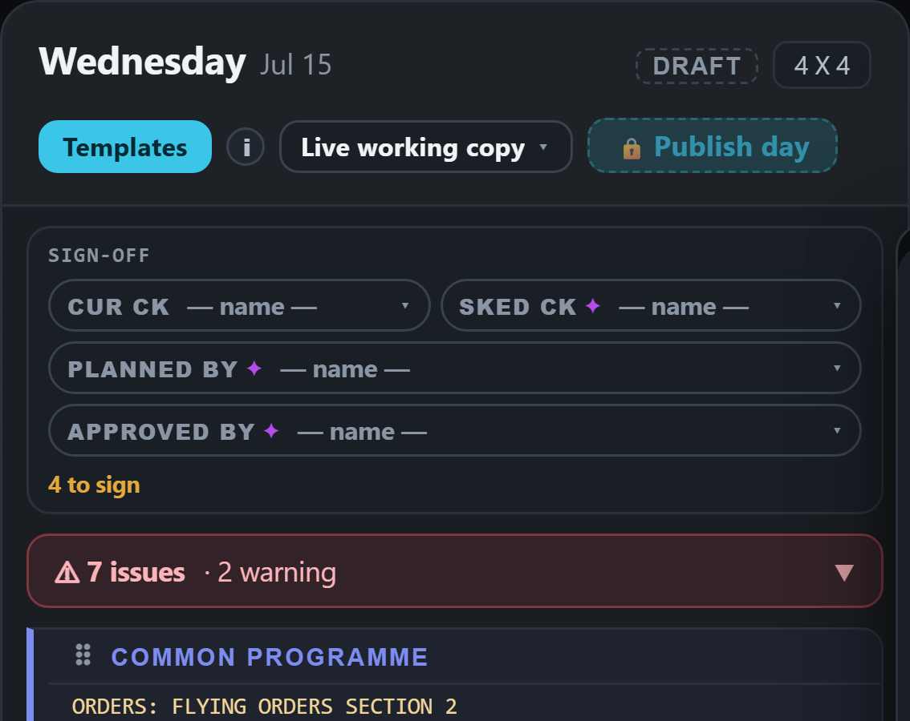
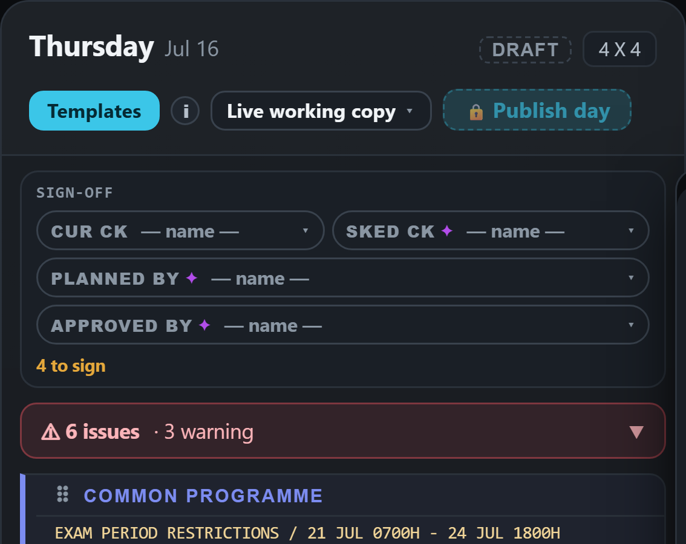
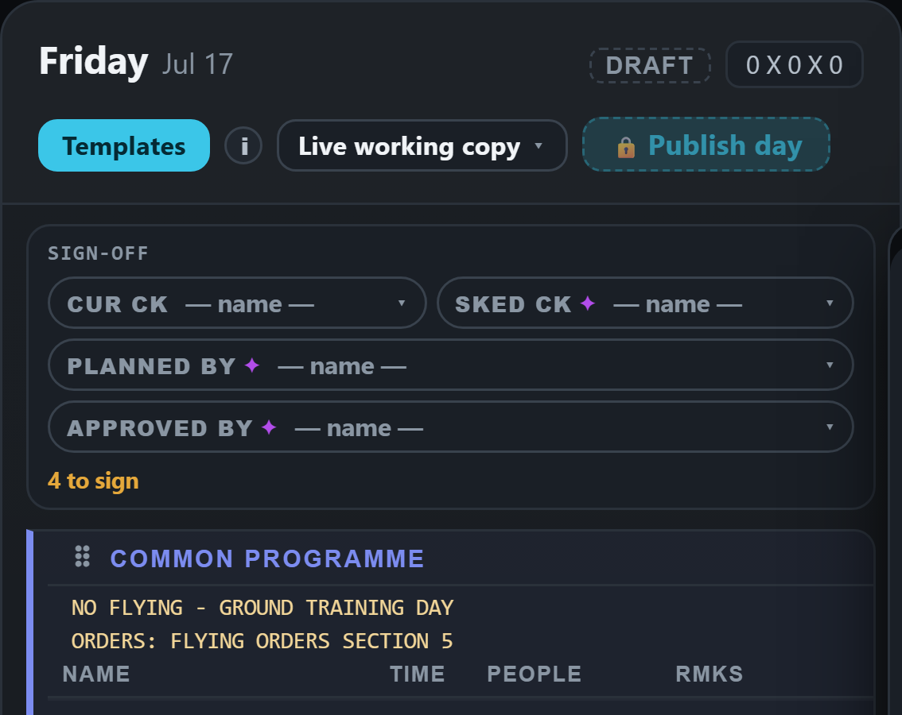
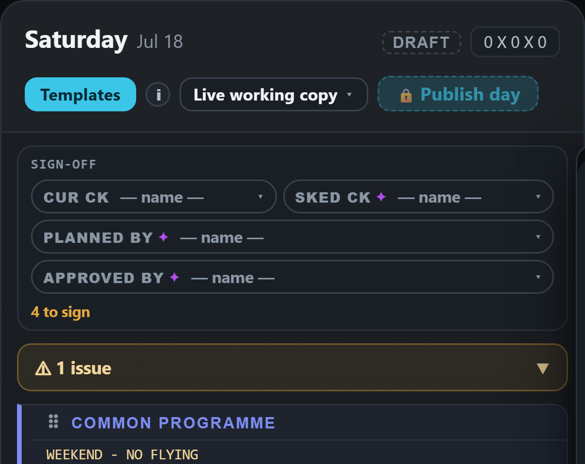
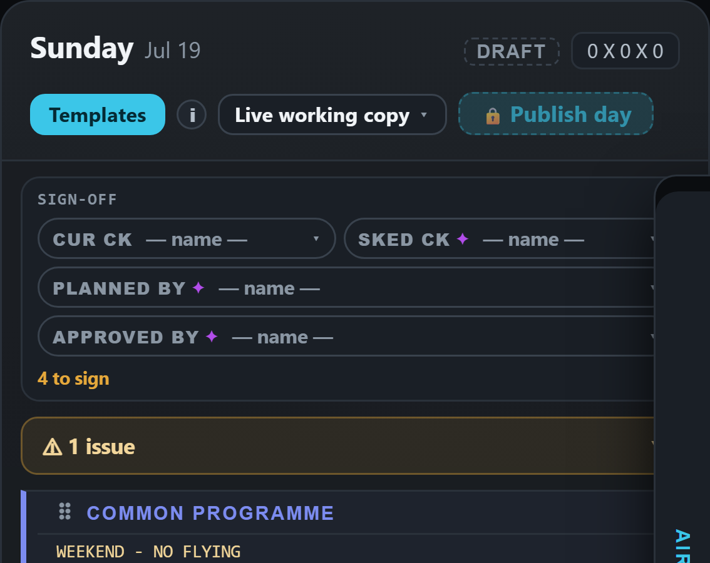
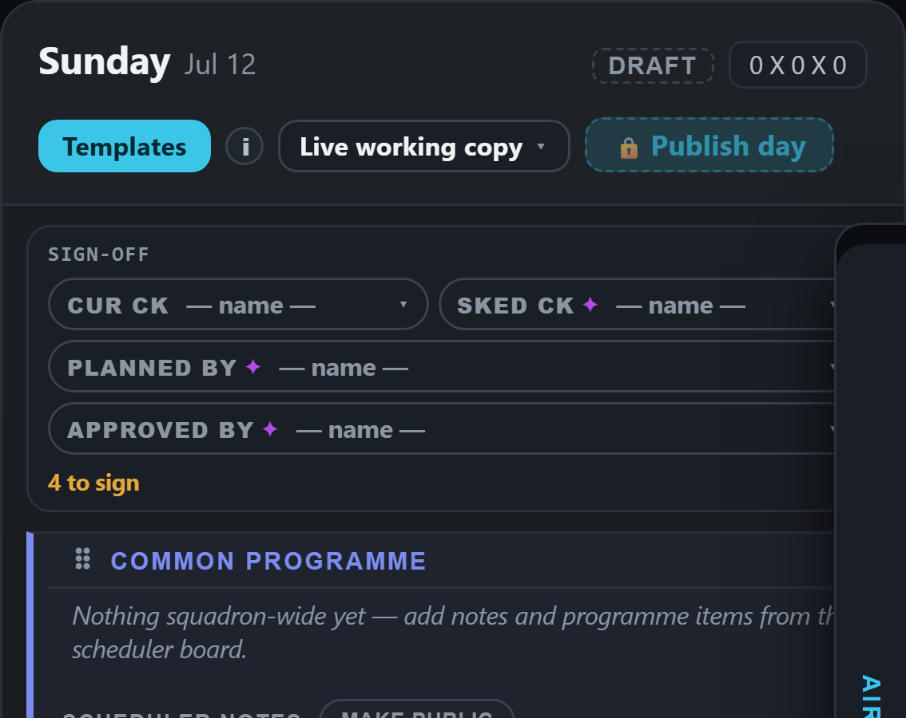
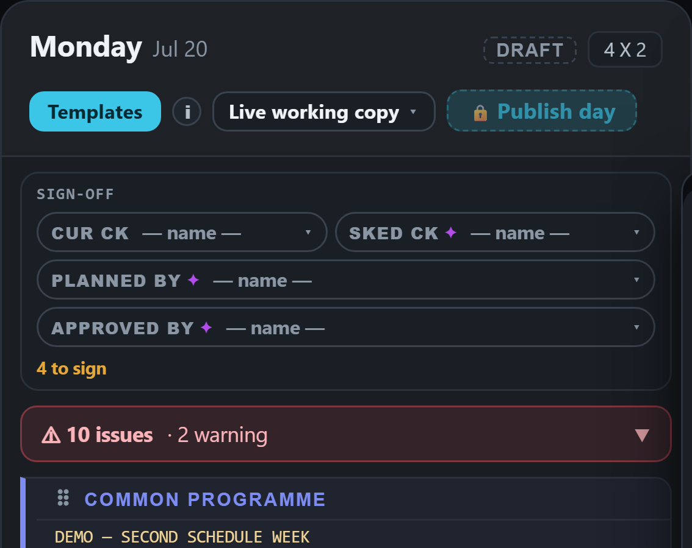

Swiping past Monday or Sunday pulls on nothing, so Safari rubber-bands the day. The app reads the pull, builds the other week, and slides two pictures of days across by itself. That slide is the app's own motion (about 60 frames a second), not the phone's scroll (120 on your iPhone), and its pace is fixed, not your finger's.


Swiping past Monday just scrolls onto last week's Sunday, the same way a swipe inside the week moves a day: Safari's own scroll, at the phone's full frame rate, at your finger's speed. The moment it comes to rest on the end card the app loads that week underneath, in place, so the card you are looking at becomes live. Nothing slides, nothing springs back. The two end cards (marked NEW) are read-only previews drawn like the desktop's next-week preview, so until the week has loaded a tap on them does nothing.
YOUR SCREEN is one card wide; the strips are drawn to show how the cards sit beside each other. Every card is a real picture of the built app at your iPhone's size; the strips, the dashed boxes and the NEW marks are drawn in.